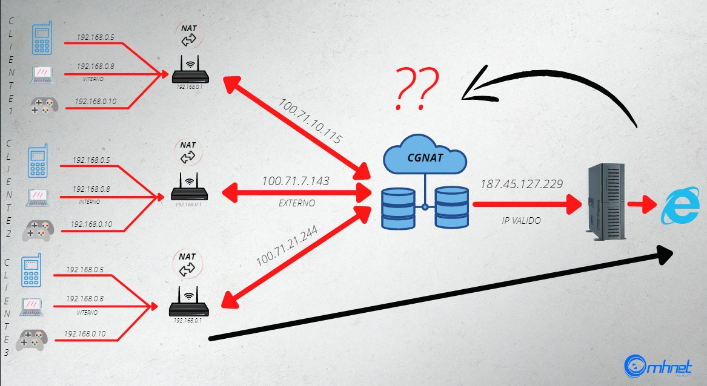
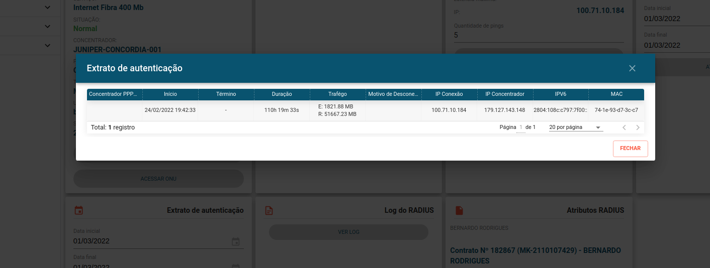
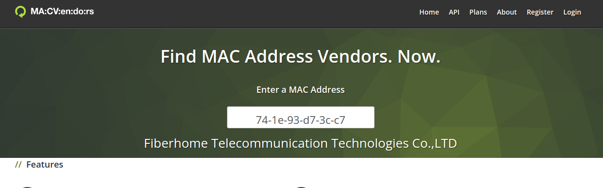
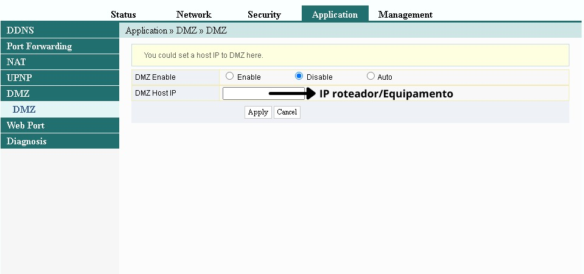
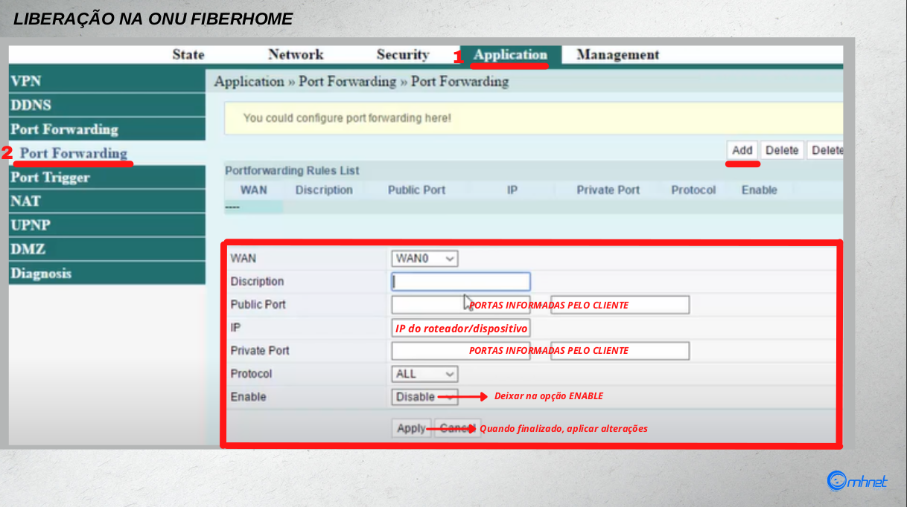
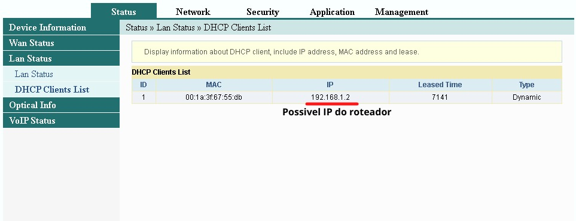
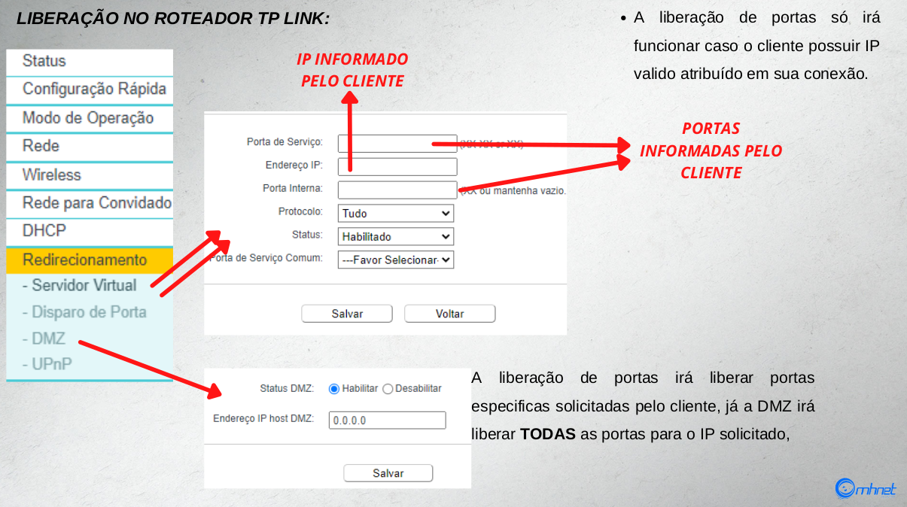
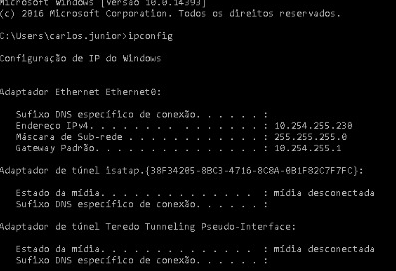
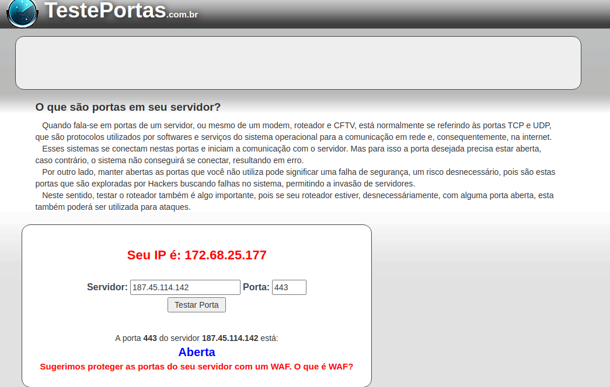

Redirecionamento de portas
Portas são uma forma do sistema operacional do seu roteador endereçar pacotes de informação que chegam da Internet ao seu computador ou qualquer dispositivo conectado à rede, de forma correta. Basicamente, se um aplicativo tem a porta "x", e está em execução no dispositivo com o IP "y", o sistema do roteador tem capacidade de saber que os dados recebidos por aquela porta dizem respeito a esse aplicativo e àquele aparelho.
Quando se fala em “abrir portas", na verdade, o que se faz é catalogar portas de rede específicas para um IP pré-determinado na sua rede. Assim, seu roteador não se ocupará de verificar o destino dos pacotes de informação e, em tese, a conexão entre dispositivo e Internet será mais rápida.
Embora você ouça a expressão “abrir portas”, na verdade, o que se faz é o redirecionamento de portas, algo que no inglês se chama de “port forwarding”. Há um total de 65.536 delas, embora os primeiros 1.024 números são bloqueados para uso. Ao redirecionar uma dessas, você aponta, na verdade, um dispositivo e um determinado serviço de rede para uma porta especial.
Um exemplo: seu PlayStation 4 tem o IP 192.168.1.105 na sua rede e você decide redirecionar as portas da PlayStation Network para melhorar o desempenho durante os jogos. Na prática, o que você faz é dizer ao roteador que o tráfego das portas usadas pela PSN deverá ser endereçado sem obstrução para o IP referente ao PS4.
Talvez a expressão “abrir portas” venha do fato de que as portas estão efetivamente bloqueadas no seu roteador, como uma medida de segurança. Ao redirecionar, se cria entrada e saída de dados irrestritos, que contorna inclusive mecanismos de segurança embutidos no roteador.
Um outro motivo e para a liberação de acesso a um servidor um exemplo:
Uma empresa necessita estar liberando um acesso ao seu sistema erp, mas para segurança, e outros motivos bloqueia o acesso ao mesmo somente para os que estão na sua rede, mas por um acaso seu Jorge é um vendedor, da empresa e mesmo e vai visitar os clientes da mesma, e precisa acessar o erp, com isso o mesmo irá usar o ip de conexão do local mais a porta que está liberada para acesso ao servidor externamente. Outro exemplo seria nosso u2000 que utiliza o ip do servidor mais porta para liberar acesso ao servidor.
O CGNAT, ou Carrier Grade Network Address Translation, é um intermediário entre sua rede doméstica e a internet, implementada a nível de provedor de acesso. Ou seja, é uma solução de NAT, a nível de provedor.
Continua complicado? Basicamente, provedores de acesso a internet estão compartilhando os escassos endereços IPv4 entre diferentes consumidores. Antes da crise, existiam dois tipos de consumidores: aqueles com um IP dinâmico, que recebiam um endereço para seus dispositivos a cada conexão, e aqueles com um IP fixo, que pagavam mais caro, mas tinham sempre o mesmo endereço IP e poderiam, se assim o desejassem, hospedar serviços de internet. A semelhança entre os dois tipos de clientes é que ambos contavam com um IP único, exclusivo, para identificação e conexão.
Entretanto, com a adoção do CGNAT, o provedor de acesso pode atribuir o mesmo endereço IP para diferentes usuários ao mesmo tempo, direcionando-os através de portas diferentes.
Essa aplicação pode gerar alguns problemas com aplicações como peer-to-peer (P2P), VoIP, streaming
de vídeo, hospedagem de jogos, tunelamento ou qualquer aplicativo que depende de um endereço IP único. São cenários incomuns, mas não improváveis. Como é o caso falado
acima sobre o redirecionamento de portas um exemplo.:

Neste nosso exemplo e compartilhado o ip 187.45.127.229 como pode ser visto até o servidor o envio vai normal, mas na volta fica mais complicado para ser localizado o equipamento, isso acaba gerando o problema de localização para o compartilhamento de pacotes, confirmando então a falta da mesma!
Agora que entendemos como o CGnat funciona vamos fazer o redirecionamento.
1° É necessário fazer a verificação de onde está a autenticação do plano. Para isso pode ser feita pelo Extrato de autenticação do cliente e junto ao site macvendores

Aqui temos o mac 74-1e-93-d7-3c-c7 o mesmo será verificado no macvendors

mesmo confirmou ser o mac junto a uma ONU Fiberhome nesse caso, temos alguns procedimentos que vamos ter de fazer!
Como o plano sobe na ONU, vamos redirecionar primeiramente na onu, para o roteador,
podemos fazer de 2 formas.
1° DMZ: irá ser redirecionado todas as portas para o roteador, assim ficando a cargo do roteador fazer o controle. 
2° Redirecionamento normal, onde irá ser encaminhado 1 ou mais portas para o roteador, ou equipamento que o cliente solicitar.

Para descobrir o ip do roteador/equipamento podemos ir

Neste local podemos verificar ip e mac dos equipamentos então sempre importante confirmar o mesmo no mac vendors
como podemos ver o mesmo está em um intelbras que seria o roteador do cliente!
mesmo obtem ip 192.168.1.2, esse é o ip que deve ser configurado para redirecionamento.
Agora, caso a autenticação esteja em um roteador, deve ser redirecionado diretamente no equipamento, usando o ip do equipamento que o cliente necessita do redirecionamento.

Em caso de um computador ou servidor pode ser capturado o ip necessário para o redirecionamento pelo cmd.

Neste caso o ip que é necessário para redirecionar e o 10.254.255.230.
Para confirmar se o ip foi redirecionado pode estar sendo usado o site teste de portas.

Nesse caso pode se perceber que o ip do servidor e o ip fixo externo da conexão do cliente.